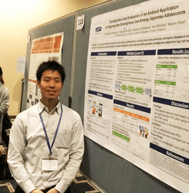

-

名前
- 浜村 俊傑（はまむら としたか）
所属
- ・国⽴研究開発法⼈国⽴精神・神経医療研究センター：認知⾏動療法センター：外来研究員
- ・⽇本学術振興会：特別研究員（PD）
- ・株式会社KDDI 総合研究所 健康⾏動変容グループ：招聘研究員
-
資格
- ⽇本臨床⼼理⼠資格認定協会：臨床⼼理⼠
- 厚⽣労働省・⽂部科学省：公認⼼理師
職歴
- 2010年09⽉〜2012年06⽉ 発達障害団体（Developmental Disabilities Association）：Residential Care Worker
- 2017年04⽉〜2019年03⽉ ⽇本学術振興会（受⼊機関／東京⼤学）：特別研究員（DC2）
- 2019年04⽉〜2020年03⽉ 株式会社KDDI総合研究所：研究員
- 2020年04⽉〜現在 ⽇本学術振興会（受⼊機関／国⽴精神・神経医療研究センター）：特別研究員（PD）
- 2019年04⽉〜現在 株式会社KDDI総合研究所：招聘研究員
-
学歴
- 2003年09⽉〜2006年06⽉ デイビッド・トンプソン⾼等学校
- 2006年09⽉〜2010年05⽉ トリニティ・ウエスタン⼤学⼈⽂社会科学部⼼理学専修
-
2012年04⽉〜2015年08⽉ カリフォルニア州⽴⼤学フラートン校 ⼤学院⼈⽂社会科学研究科
⼼理学専攻 臨床⼼理学コース 修⼠課程 -
2016年04⽉〜2019年03⽉ 東京⼤学 ⼤学院教育学研究科 総合教育科学専攻 ⼼⾝発達科学専修
臨床⼼理学コース 博⼠課程
Toshitaka Hamamura, Ph.D.